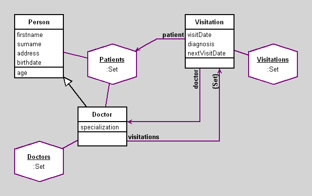

Doctor's Office
author(s): Vojtech Merunka
OODB Example with Doctors, Patients, Visitations
(C) 2006-2007 V.M.
Workspace
"select all patients having dignosis diarrhoea"
(Visitations select: [:v | v diagnosis = 'diarrhoea'])
collect: [:v | v patient]
Workspace Objects
-
Doctors :Set
-
Patients :Set
-
Visitations :Set
Script
Doctors := Set new.
Patients := Set new.
Visitations := Set new.
d01 := Doctor new
firstname: 'Jan'; surname: 'Novak'; address: 'Praha, Novakova 12'; birthdate: '4-JAN-1950' asDate; specialization: 'practicioner'.
d02 := Doctor new
firstname: 'Joe'; surname: 'Davidson'; address: 'London, Regent str. 5'; birthdate: '27-MAR-1949' asDate; specialization: 'practicioner'.
d03 := Doctor new
firstname: 'Ivan'; surname: 'Zeleny'; address: 'Moskva, Pushkinova 2'; birthdate: '15-NOV-1955' asDate; specialization: 'psychologist'.
d04 := Doctor new
firstname: 'Kostas'; surname: 'Kokkinos'; address: 'Iraklio, Evans 3'; birthdate: '31-AUG-1977' asDate; specialization: 'surgeon'.
d05 := Doctor new
firstname: 'Ivan'; surname: 'Drago'; address: 'Sofia, Duga 71'; birthdate: '1-JAN-1979' asDate; specialization: 'surgeon'.
d06 := Doctor new
firstname: 'Milan'; surname: 'Novak'; address: 'Brno, V Lese 21'; birthdate: '20-FEB-1971' asDate; specialization: 'psychologist'.
d07 := Doctor new
firstname: 'Michailos'; surname: 'Asklepios'; address: 'Rodos, Kalithea 3'; birthdate: '28-MAY-1975' asDate; specialization: 'practicioner'.
Doctors add: d01; add: d02; add: d03; add: d04; add: d05; add: d06; add: d07.
p01 := Person new
firstname: 'Petr'; surname: 'Novak'; address: 'Praha, Jeronymova 13'; birthdate: '4-OCT-1967' asDate.
p02 := Person new
firstname: 'Michal'; surname: 'Skrbek'; address: 'Praha, Parlerova 234'; birthdate: '6-DEC-1945' asDate.
p03 := Person new
firstname: 'Jan'; surname: 'Zeleny'; address: 'Praha, Novotneho 20'; birthdate: '8-MAR-1978' asDate.
p04 := Person new
firstname: 'Pavel'; surname: 'Novak'; address: 'Praha, Zizkova 10'; birthdate: '6-AUG-1976' asDate.
p05 := Person new
firstname: 'Josef'; surname: 'Polak'; address: 'Praha, Sotonova 89'; birthdate: '1-FEB-1933' asDate.
p06 := Person new
firstname: 'Michal'; surname: 'Capek'; address: 'Praha, Nerudova 123'; birthdate: '4-DEC-1999' asDate.
p07 := Person new
firstname: 'Joe'; surname: 'Smith'; address: 'Praha, Nerudova 34'; birthdate: '3-MAY-1965' asDate.
p08 := Person new
firstname: 'Ivan'; surname: 'Novak'; address: 'Praha, Sotonova 341'; birthdate: '19-JAN-1980' asDate.
p09 := Person new
firstname: 'Ivan'; surname: 'Vlcek'; address: 'Praha, Muklova 3'; birthdate: '10-DEC-1981' asDate.
p10 := Person new
firstname: 'Milan'; surname: 'Zeleny'; address: 'Praha, Muklova 7'; birthdate: '5-MAY-1988' asDate.
p11 := Person new
firstname: 'Ivan'; surname: 'Noha'; address: 'Praha, Zizkova 56'; birthdate: '3-JAN-1954' asDate.
p12 := Person new
firstname: 'Jan'; surname: 'Novak'; address: 'Praha, Nerudova 87'; birthdate: '12-FEB-1964' asDate.
Patients add: p01; add: p02; add: p03; add: p04; add: p05; add: p06; add: p07;
add: p08; add: p09; add: p10; add: p11; add: p12; add: d07.
v01 := Visitation new doctor: d01; patient: p01;
visitDate: '12-DEC-2000' asDate; diagnosis: 'tonsillitis'; nextVisitDate: '31-DEC-2000' asDate.
v02 := Visitation new doctor: d01; patient: p06;
visitDate: '2-FEB-2000' asDate; diagnosis: 'flu'; nextVisitDate: '20-FEB-2000' asDate.
v03 := Visitation new doctor: d01; patient: p10;
visitDate: '3-NOV-2000' asDate; diagnosis: 'alergy'; nextVisitDate: '3-DEC-2000' asDate.
v04 := Visitation new doctor: d01; patient: p12;
visitDate: '23-MAR-2000' asDate; diagnosis: 'diarrhoea'; nextVisitDate: '26-MAR-2000' asDate.
v05 := Visitation new doctor: d02; patient: p11;
visitDate: '3-MAR-2000' asDate; diagnosis: 'flu'; nextVisitDate: '9-MAR-2000' asDate.
v06 := Visitation new doctor: d02; patient: p03;
visitDate: '23-MAY-2000' asDate; diagnosis: 'tonsillitis'; nextVisitDate: '24-MAY-2000' asDate.
v07 := Visitation new doctor: d03; patient: p02;
visitDate: '11-NOV-2000' asDate; diagnosis: 'depression'; nextVisitDate: '11-DEC-2000' asDate.
v08 := Visitation new doctor: d03; patient: p03;
visitDate: '22-OCT-2000' asDate; diagnosis: 'sleeplessness'; nextVisitDate: '28-OCT-2000' asDate.
v09 := Visitation new doctor: d03; patient: p05;
visitDate: '11-SEP-2000' asDate; diagnosis: 'depression'; nextVisitDate: '11-OCT-2000' asDate.
v10 := Visitation new doctor: d04; patient: p04;
visitDate: '1-SEP-2000' asDate; diagnosis: 'appendicitis'; nextVisitDate: '20-SEP-2000' asDate.
v11 := Visitation new doctor: d04; patient: p07;
visitDate: '31-OCT-2000' asDate; diagnosis: 'headache'; nextVisitDate: '10-NOV-2000' asDate.
v12 := Visitation new doctor: d05; patient: p08;
visitDate: '11-NOV-2000' asDate; diagnosis: 'appendicitis'; nextVisitDate: '11-DEC-2000' asDate.
v13 := Visitation new doctor: d05; patient: p09;
visitDate: '23-AUG-2000' asDate; diagnosis: 'headache'; nextVisitDate: '23-OCT-2000' asDate.
v14 := Visitation new doctor: d06; patient: p10;
visitDate: '11-NOV-2000' asDate; diagnosis: 'depression'; nextVisitDate: '11-DEC-2000' asDate.
v15 := Visitation new doctor: d06; patient: p11;
visitDate: '13-MAR-2000' asDate; diagnosis: 'sleeplessness'; nextVisitDate: '13-APR-2000' asDate.
v16 := Visitation new doctor: d07; patient: p02;
visitDate: '11-NOV-2000' asDate; diagnosis: 'tonsillitis'; nextVisitDate: '23-NOV-2000' asDate.
v17 := Visitation new doctor: d07; patient: p10;
visitDate: '27-JUL-2000' asDate; diagnosis: 'flu'; nextVisitDate: '27-AUG-2000' asDate.
v18 := Visitation new doctor: d07; patient: p11;
visitDate: '11-NOV-2000' asDate; diagnosis: 'alergy'; nextVisitDate: '15-NOV-2000' asDate.
v19 := Visitation new doctor: d07; patient: p07;
visitDate: '19-JUL-2000' asDate; diagnosis: 'diarrhoea'; nextVisitDate: '20-JUL-2000' asDate.
v20 := Visitation new doctor: d01; patient: d07;
visitDate: '23-JUL-2000' asDate; diagnosis: 'diarrhoea'; nextVisitDate: '24-JUL-2000' asDate.
d01 visitations add: v01; add: v02; add: v03; add: v04; add: v20.
d02 visitations add: v05; add: v06.
d03 visitations add: v07; add: v08; add: v09.
d04 visitations add: v10; add: v11.
d05 visitations add: v12; add: v13.
d06 visitations add: v14; add: v15.
d07 visitations add: v16; add: v17; add: v18; add: v19.
Visitations add: v01; add: v02; add: v03; add: v04; add: v05; add: v06; add: v07;
add: v08; add: v09; add: v10; add: v11; add: v12; add: v13; add: v14; add: v15;
add: v16; add: v17; add: v18; add: v19; add: v20.
Diagram

Classes
Person
|
instance variables
address :String
birthdate :Date
firstname :String
surname :String
|
methods
address
address:
age
birthdate
birthdate:
firstname
firstname:
initialize
surname
surname:
|
|
Instances of this class stores info about persons.
Each person knows its name (firstname & surname), address and birthdate.
Attribute of each person has also age, but this attribute is made by method.
|
code of non-accessing methods:
-
age
birthdate isNil
ifTrue: [^nil]
ifFalse: [^((Date today subtractDate: birthdate) / 365.2422) truncated]
-
initialize
"generated by Daskalos"
super initialize.
firstname := nil.
surname := nil.
address := nil.
birthdate := nil.
Visitation
|
instance variables
diagnosis :String
doctor :Object
nextVisitDate :Date
patient :Object
visitDate :Date
|
methods
diagnosis
diagnosis:
doctor
doctor:
initialize
nextVisitDate
nextVisitDate:
patient
patient:
visitDate
visitDate:
|
|
This is class having instances, which stores data about visitation of some person at some doctor.
|
code of non-accessing methods:
Doctor
|
instance variables
specialization :String
visitations :Set
|
methods
initialize
specialization
specialization:
visitations
|
|
Concrete subclass of class Person, which add specific behavior for persons being medical doctors. note that a doctor may be a patient as well.
|
code of non-accessing methods:
Links
Data file and
class source.
Generated by Daskalos - Object Modeling Tutor (C) 2006 V. Merunka
May 7, 2007